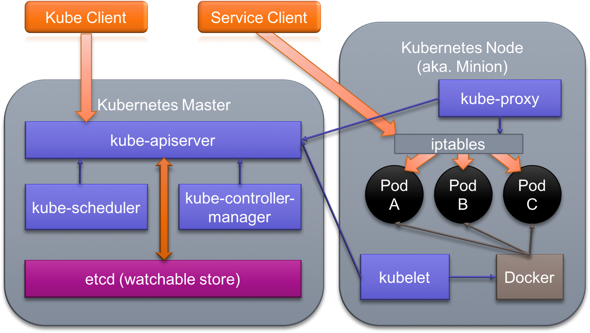

Kubernetes is an open-source platform for automating deployment, scaling, and operations of application containers across clusters of hosts. Kubernetes seeks to foster an ecosystem of components and tools that relieve the burden of running applications in public and private clouds and can run on a range of platforms, from your laptop, to VMs on a cloud provider, to racks of bare metal servers.
In this lab we will setup and explore a minimal Kubernetes cluster. Installation has several prerequisites:
containerd or CRI-O are preferred over container engines like Docker or Podman (which include build
and networking capabilities that Kubernetes does not require). The latest containerd versions are distributed through
repositories hosted by Docker under the containerd.io package.This lab will walk you through a basic Kubernetes installation. The model below illustrates the Kubernetes control plane and worker node roles, we will run both on a single system.

NOTE: Kubernetes requires an Open Container Initiative compliant Container Runtime. If you previously installed Docker, skip to section 1!
Login to your machine using an ssh client:
@laptop:~$ chmod 400 <class SSH Key>.pem
@laptop:~$ ssh -i <class SSH Key>.pem ubuntu@<your VM IP>
Welcome to Ubuntu 22.04.2 LTS (GNU/Linux 5.15.0-1031-aws x86_64)
...
~$
Docker provides a convenience script to install the latest version of Docker. While not recommended for production
environments, it works for quick installs in testing, dev and lab scenarios. Install docker on your lab system using the
get.docker.com install script.
DO NOT follow the instructions provided by the script's output!
~$ wget -qO - https://get.docker.com/ | sh
# Executing docker install script, commit: 0221adedb4bcde0f3d18bddda023544fc56c29d1
...
~$
For our in-class purposes, eliminating the need for sudo execution of the docker command will simplify our practice
sessions--but setting up docker for rootless access (as the script suggests) would be overly complicated. The easiest
way to make it possible to connect to the local Docker daemon without sudo is to add our user id to the docker
group. To add your user to the docker group execute the following command:
~$ sudo usermod -aG docker $(whoami)
~$
Even though the docker group was added to your user's group list, your login shell maintains the old groups. After updating your user groups you will need to restart your login shell to ensure the changes take effect.
In the lab system the easiest approach is to logout at the command line:
~$ exit
logout
@laptop:~$
Now, simply reconnect:
@laptop:~$ ssh -i <class SSH Key>.pem ubuntu@<your VM IP>
...
~$
After logging back in, check to see that your user shell session is now a part of the docker group:
~$ id
uid=1000(ubuntu) gid=1000(ubuntu) groups=1000(ubuntu),4(adm),24(cdrom),27(sudo),30(dip),46(plugdev),116(lxd),125(libvirt),998(docker)
~$
Great. Your current shell user, and any new shell sessions, can now use the docker command without elevation.
First we need to address a few host-level Kubernetes installation prerequisites.
N.B. On most cloud instances this step is not necessary as swap is typically disabled by default
As of K8s 1.8, the kubelet fails if swap is enabled on a node. You can override this requirement using the
--fail-swap-on=false flag on the Kubelet. However, we can simply turn off swap with sudo swapoff -a:
~$ sudo swapoff -a
~$ sudo cat /proc/swaps
Filename Type Size Used Priority
~$
Comment out any swap volume entry in the file system table file, fstab. If you do not comment out the swap volume the
swap will re-enable on reboot and the Kubelet will fail to start and the rest of your cluster will not start either.
The containerd.io that comes with Docker installs a Docker-appropriate containerd configuration at
/etc/containerd/config.toml, which we will need to change:
~$ cat /etc/containerd/config.toml
# Copyright 2018-2022 Docker Inc.
# Licensed under the Apache License, Version 2.0 (the "License");
# you may not use this file except in compliance with the License.
# You may obtain a copy of the License at
# http://www.apache.org/licenses/LICENSE-2.0
# Unless required by applicable law or agreed to in writing, software
# distributed under the License is distributed on an "AS IS" BASIS,
# WITHOUT WARRANTIES OR CONDITIONS OF ANY KIND, either express or implied.
# See the License for the specific language governing permissions and
# limitations under the License.
disabled_plugins = ["cri"]
...
~$
The disabled_plugins = ["cri"] line prevents anything using the container runtime interface (like the Kubernetes
Kubelet or a tool like crictl) from interacting with this instance of containerd. We can opt out of this by
regenerating a configuration using containerd config default.
Back up the /etc/containerd/config.toml:
~$ sudo mv /etc/containerd/config.toml /etc/containerd/config.docker
~$
Then use containerd config default to populate the default containerd settings (which will effectively remove the
restriction):
~$ sudo containerd config default | sudo tee /etc/containerd/config.toml
disabled_plugins = []
imports = []
oom_score = 0
plugin_dir = ""
...
~$
Before proceeding, you need to also change the cgroup manager.
By default, the containerd uses cgroupfs to manage the Linux cgroups for container isolation.
Control groups, or cgroups, are used to constrain resources that are allocated to processes. Using cgroupfs alongside systemd means that there will then be two different cgroup managers. A single cgroup manager simplifies the view of what resources are being allocated and will by default have a more consistent view of the available and in-use resources.
Modify containerd to use the systemd cgroup management driver:
~$ sudo sed -i -e 's/SystemdCgroup = false/SystemdCgroup = true/' /etc/containerd/config.toml
~$
This sed command modifies any strings in the configuration for SystemdCgroup.
We need to run another sed command to ensure containerd also uses the correct pause container image. Pause containers
are used by Kubernetes to help enable the "pod sandbox" - the shared isolation used to enable more complex container
patterns when running containers within Kubernetes.
~$ sudo sed -i -e 's/pause:3.6/pause:3.9/' /etc/containerd/config.toml
~$
After changing the configuration, restart the containerd service:
~$ sudo systemctl restart containerd
~$
Moving forward, containerd is now open to CRI requests and uses systemd to manage all container cgroups.
With the host prepared, it is time to install the Kubernetes binaries. These are available on most package managers,
including the Debian apt and RHEL-based yum.
Add the Google cloud packages repo key so that we can install packages hosted by Google:
~$ curl -fsSL https://pkgs.k8s.io/core:/stable:/v1.29/deb/Release.key | \
sudo gpg --dearmor -o /etc/apt/keyrings/kubernetes-apt-keyring.gpg
~$
Now add a repository list file with an entry for Ubuntu Xenial apt.kubernetes.io packages. The following command
copies the repo url into the "kubernetes.list" file:
~$ echo 'deb [signed-by=/etc/apt/keyrings/kubernetes-apt-keyring.gpg] https://pkgs.k8s.io/core:/stable:/v1.29/deb/ /' | \
sudo tee /etc/apt/sources.list.d/kubernetes.list
deb [signed-by=/etc/apt/keyrings/kubernetes-apt-keyring.gpg] https://pkgs.k8s.io/core:/stable:/v1.29/deb/ /
~$
Update the package indexes to add the Kubernetes packages from the Kubernetes apt repository:
~$ sudo apt update
...
Get:6 https://prod-cdn.packages.k8s.io/repositories/isv:/kubernetes:/core:/stable:/v1.29/deb InRelease [1186 B]
Get:7 https://prod-cdn.packages.k8s.io/repositories/isv:/kubernetes:/core:/stable:/v1.29/deb Packages [2759 B]
Fetched 114 kB in 1s (106 kB/s)
Reading package lists... Done
Building dependency tree... Done
Reading state information... Done
36 packages can be upgraded. Run 'apt list --upgradable' to see them.
~$
Notice the new prod-cdn.packages.k8s.io repository above. If you do not see it in your terminal output, you must fix
the entry in /etc/apt/sources.list.d/kubernetes.list before moving on!
Now we can install standard Kubernetes packages.
The kubeadm tool simplifies the process of installing a Kubernetes cluster. To use kubeadm we will also need the
kubectl cluster CLI tool and the kubelet node manager. We will also install Kubernetes CNI (Container Network
Interface) support for multi-host networking.
Use the apt package manager to install the needed packages for the latest cluster version of Kubernetes:
~$ sudo apt install -y kubeadm
Reading package lists... Done
Building dependency tree
Reading state information... Done
The following additional packages will be installed:
conntrack cri-tools ebtables kubectl kubelet kubernetes-cni socat
Suggested packages:
nftables
The following NEW packages will be installed:
conntrack cri-tools ebtables kubeadm kubectl kubelet kubernetes-cni socat
0 upgraded, 8 newly installed, 0 to remove and 17 not upgraded.
Need to get 83.7 MB of archives.
After this operation, 340 MB of additional disk space will be used.
...
~$
Kubeadm and Kubelet are now installed and ready to initialize a cluster:
Verify kubeadm is properly installed by checking kubeadm's version:
~$ kubeadm version
kubeadm version: &version.Info{Major:"1", Minor:"29", GitVersion:"v1.29.0", GitCommit:"3f7a50f38688eb332e2a1b013678c6435d539ae6", GitTreeState:"clean", BuildDate:"2023-12-13T08:50:10Z", GoVersion:"go1.21.5", Compiler:"gc", Platform:"linux/amd64"}
~$
With all of the necessary prerequisites installed we can now use kubeadm with the
--cri-socket=unix:///run/containerd/containerd.sock argument to initialize a cluster with containerd as the container
runtime:
DO NOT execute any of the additional instructions output after running sudo kubeadm init!
~$ sudo kubeadm init --cri-socket=unix:///run/containerd/containerd.sock
[init] Using Kubernetes version: v1.29.0
[preflight] Running pre-flight checks
[preflight] Pulling images required for setting up a Kubernetes cluster
[preflight] This might take a minute or two, depending on the speed of your internet connection
[preflight] You can also perform this action in beforehand using 'kubeadm config images pull'
[certs] Using certificateDir folder "/etc/kubernetes/pki"
[certs] Generating "ca" certificate and key
[certs] Generating "apiserver" certificate and key
[certs] apiserver serving cert is signed for DNS names [ip-172-31-17-249 kubernetes kubernetes.default kubernetes.default.svc kubernetes.default.svc.cluster.local] and IPs [10.96.0.1 172.31.17.249]
[certs] Generating "apiserver-kubelet-client" certificate and key
[certs] Generating "front-proxy-ca" certificate and key
[certs] Generating "front-proxy-client" certificate and key
[certs] Generating "etcd/ca" certificate and key
[certs] Generating "etcd/server" certificate and key
[certs] etcd/server serving cert is signed for DNS names [ip-172-31-17-249 localhost] and IPs [172.31.17.249 127.0.0.1 ::1]
[certs] Generating "etcd/peer" certificate and key
[certs] etcd/peer serving cert is signed for DNS names [ip-172-31-17-249 localhost] and IPs [172.31.17.249 127.0.0.1 ::1]
[certs] Generating "etcd/healthcheck-client" certificate and key
[certs] Generating "apiserver-etcd-client" certificate and key
[certs] Generating "sa" key and public key
[kubeconfig] Using kubeconfig folder "/etc/kubernetes"
[kubeconfig] Writing "admin.conf" kubeconfig file
[kubeconfig] Writing "super-admin.conf" kubeconfig file
[kubeconfig] Writing "kubelet.conf" kubeconfig file
[kubeconfig] Writing "controller-manager.conf" kubeconfig file
[kubeconfig] Writing "scheduler.conf" kubeconfig file
[etcd] Creating static Pod manifest for local etcd in "/etc/kubernetes/manifests"
[control-plane] Using manifest folder "/etc/kubernetes/manifests"
[control-plane] Creating static Pod manifest for "kube-apiserver"
[control-plane] Creating static Pod manifest for "kube-controller-manager"
[control-plane] Creating static Pod manifest for "kube-scheduler"
[kubelet-start] Writing kubelet environment file with flags to file "/var/lib/kubelet/kubeadm-flags.env"
[kubelet-start] Writing kubelet configuration to file "/var/lib/kubelet/config.yaml"
[kubelet-start] Starting the kubelet
[wait-control-plane] Waiting for the kubelet to boot up the control plane as static Pods from directory "/etc/kubernetes/manifests". This can take up to 4m0s
[apiclient] All control plane components are healthy after 9.002925 seconds
[upload-config] Storing the configuration used in ConfigMap "kubeadm-config" in the "kube-system" Namespace
[kubelet] Creating a ConfigMap "kubelet-config" in namespace kube-system with the configuration for the kubelets in the cluster
[upload-certs] Skipping phase. Please see --upload-certs
[mark-control-plane] Marking the node ip-172-31-17-249 as control-plane by adding the labels: [node-role.kubernetes.io/control-plane node.kubernetes.io/exclude-from-external-load-balancers]
[mark-control-plane] Marking the node ip-172-31-17-249 as control-plane by adding the taints [node-role.kubernetes.io/control-plane:NoSchedule]
[bootstrap-token] Using token: 5mxwrv.sgicxs0q5efdd4mo
[bootstrap-token] Configuring bootstrap tokens, cluster-info ConfigMap, RBAC Roles
[bootstrap-token] Configured RBAC rules to allow Node Bootstrap tokens to get nodes
[bootstrap-token] Configured RBAC rules to allow Node Bootstrap tokens to post CSRs in order for nodes to get long term certificate credentials
[bootstrap-token] Configured RBAC rules to allow the csrapprover controller automatically approve CSRs from a Node Bootstrap Token
[bootstrap-token] Configured RBAC rules to allow certificate rotation for all node client certificates in the cluster
[bootstrap-token] Creating the "cluster-info" ConfigMap in the "kube-public" namespace
[kubelet-finalize] Updating "/etc/kubernetes/kubelet.conf" to point to a rotatable kubelet client certificate and key
[addons] Applied essential addon: CoreDNS
[addons] Applied essential addon: kube-proxy
Your Kubernetes control-plane has initialized successfully!
To start using your cluster, you need to run the following as a regular user:
mkdir -p $HOME/.kube
sudo cp -i /etc/kubernetes/admin.conf $HOME/.kube/config
sudo chown $(id -u):$(id -g) $HOME/.kube/config
Alternatively, if you are the root user, you can run:
export KUBECONFIG=/etc/kubernetes/admin.conf
You should now deploy a pod network to the cluster.
Run "kubectl apply -f [podnetwork].yaml" with one of the options listed at:
https://kubernetes.io/docs/concepts/cluster-administration/addons/
Then you can join any number of worker nodes by running the following on each as root:
kubeadm join 172.31.17.249:6443 --token 5mxwrv.sgicxs0q5efdd4mo \
--discovery-token-ca-cert-hash sha256:8a5696ac6b7ae9d2828857b362f57bfc4d25bfcf4d46fa61be7d1e45c8a6741c
~$
Examine the output from kubeadm but DO NOT follow the suggestions!! We will be performing them during the subsequent steps of this lab in guided exercises!
The command line tool used to interact with our Kubernetes cluster is kubectl. kubectl makes interacting with the
cluster from the command line easy by packaging (or generating) Kubernetes specifications from your inputs and
submitting them to the Kubernetes API Server on your behalf.
Run the kubectl config view subcommand to display the current client configuration:
~$ kubectl config view
apiVersion: v1
clusters: null
contexts: null
current-context: ""
kind: Config
preferences: {}
users: null
~$
As you can see the only value we have configured is the apiVersion which is set to v1, the current Kubernetes API
version. The kubectl command tries to reach the API server on port 8080 via the localhost loopback without TLS by
default (which will not work).
This config is stored in a Kubeconfig file. Kubeconfig files provide credentials for sending API requests to a
Kubernetes API server. They define API server addresses to send requests to and user authentication information which
identifies the client (in this case, kubectl).
Kubeadm creates a kubeconfig file during deployment of the control plane and places it in /etc/kubernetes as
admin.conf. Copy admin.conf in a new .kube directory under your home directory, and change its owner (chown) to
your UID/GID:
~$ mkdir -p $HOME/.kube
~$ sudo cp -i /etc/kubernetes/admin.conf $HOME/.kube/config
~$ sudo chown $(id -u):$(id -g) $HOME/.kube/config
~$
Verify the kubeconfig we just copied is understood:
~$ kubectl config view
apiVersion: v1
clusters:
- cluster:
certificate-authority-data: DATA+OMITTED
server: https://172.31.17.249:6443
name: kubernetes
contexts:
- context:
cluster: kubernetes
user: kubernetes-admin
name: kubernetes-admin@kubernetes
current-context: kubernetes-admin@kubernetes
kind: Config
preferences: {}
users:
- name: kubernetes-admin
user:
client-certificate-data: DATA+OMITTED
client-key-data: DATA+OMITTED
~$
The combination of an API server address and user is called a context. The default context in this kubeconfig file is
kubernetes-admin@kubernetes, which is the administrator for the cluster you just initialized:
~$ kubectl config current-context
kubernetes-admin@kubernetes
~$
The kubernetes-admin user grants you full control over this cluster. You can now use kubectl to gather information
about the resources deployed with your Kubernetes cluster, verify that the current context can access the cluster:
~$ kubectl get node
NAME STATUS ROLES AGE VERSION
ip-172-31-17-249 NotReady control-plane 7m3s v1.29.0
~$
kubectl can successfully communicate with the API server but it looks like the cluster is not ready for operation just
yet (note the "NotReady" value under STATUS). The ROLES entries indicate that this node hosts the core Kubernetes
control plane services like the API Server, Scheduler, and Controller Manager.
During the default initialization of the cluster, kubeadm applies a series of reservations to the control plane node which ensures that only control plane components (like the API Server, Scheduler, and Controller Manager) run on that node. This ensures stability and guarantee resources for them during normal operation. Kubernetes is typically expected to run across multiple nodes, with regular user workloads running on other nodes (commonly known was "workers"). For a single-node development/learning test case, these reservations need to be removed.
In Kubernetes terms, the control plane node is "tainted". A taint consists of a key, an optional value, and an effect. The effect must be NoSchedule, PreferNoSchedule or NoExecute.
Above we used kubectl get node to output the table showing us information about our node but by using the -o
outputter with the name argument we can just receive the node's name, try it:
~$ kubectl get node -o name
node/ip-172-31-32-172
~$
We can nest the above command in a sub-shell and pass it to the kubectl describe subcommand to see details for the
control plane node, using grep to search for the term taint
~$ kubectl describe $(kubectl get node -o name) | grep -i taint -A2
Taints: node-role.kubernetes.io/control-plane:NoSchedule
node.kubernetes.io/not-ready:NoSchedule
Unschedulable: false
~$
We will examine the full describe output later but as you can see the master has the
node-role.kubernetes.io/control-plane taint with the effect NoSchedule. This means the Kubernetes scheduler can not
place pods on this node. To remove this taint we can use the kubectl taint subcommand.
NOTE: the command below removes ("-") the taints from all (--all) nodes in the cluster. Do not forget the
trailing "-" following the taint key "master"! The "-" is what tells Kubernetes to remove the taint!
~$ kubectl taint node --all node-role.kubernetes.io/control-plane-
node/ip-172-31-32-172 untainted
~$
We know what you're thinking and we agree, "taint" is an awful name for this feature and a trailing dash with no space is an equally wacky way to remove something.
Check again to see if the taint was removed:
~$ kubectl describe $(kubectl get node -o name) | grep -i taints -A2
Taints: node.kubernetes.io/not-ready:NoSchedule
Unschedulable: false
Lease:
~$
After removing the control plane taints, one more taint (the "not-ready" taint) remains. This indicates that the node
(or rather, its Kubelet) is not ready to run workloads.
Since the taint mentions status not-ready, let's grep "ready" status from the node's describe output:
~$ kubectl describe $(kubectl get node -o name) | grep -i ready
Taints: node.kubernetes.io/not-ready:NoSchedule
Ready False Mon, 25 Sep 2023 08:27:44 +0000 Mon, 25 Sep 2023 08:27:27 +0000 KubeletNotReady container runtime network not ready: NetworkReady=false reason:NetworkPluginNotReady message:Network plugin returns error: cni plugin not initialized
~$
Our Kubernetes cluster does not have any networking in place. Let's fix that!
In the previous step, we found out that our control plane node is hung in the not ready status, with the Kubelet
reporting that the container network plugin is not ready.
Based on the readiness message from the node, the node expects a CNI plugin for networking but we have not yet supplied a CNI plugin. We can easily add the Weave CNI container networking drivers using a POD spec from the Internet:
~$ kubectl apply -f https://github.com/weaveworks/weave/releases/download/v2.8.1/weave-daemonset-k8s-1.11.yaml
serviceaccount/weave-net created
clusterrole.rbac.authorization.k8s.io/weave-net created
clusterrolebinding.rbac.authorization.k8s.io/weave-net created
role.rbac.authorization.k8s.io/weave-net created
rolebinding.rbac.authorization.k8s.io/weave-net created
daemonset.apps/weave-net created
~$
CNI plugins assign IP addresses to workloads in the cluster. Different CNI plugins will achieve this in different ways. The weave-net plugin you installed creates a virtual router process and bridge interface on every host. Pods are attached to the bridge interface with a plugin-managed IP address. The virtual routers (running as containers managed by a daemonset) communicate with each other to realize the pod network, establishing a protocol handshake and learning about the pod network topology.
The CNI plugin components will now take a few moments (in this test cluster) to start up. Check if there are any more taints on our master node and see if it is finally ready:
~$ kubectl describe $(kubectl get node -o name) | grep -i taints
Taints: <none>
~$ kubectl get node
NAME STATUS ROLES AGE VERSION
ip-172-31-17-249 Ready control-plane 6m v1.29.0
~$
The taint has been cleared from our control plane node, and Kubernetes will now allow pods to run on our single node cluster.
Kubernetes clusters track and manage objects of various "kinds". Applications make use of four kinds of objects in particular:
Thus basic Kubernetes applications consist of pods, which implement the application functionality; ReplicaSets, which ensure pods are always available; and Services which expose a dynamic set of pods to clients as a single endpoint. Deployments describe how to launch or upgrade a given application (set of pods) at a controlled rate.
Using kubectl you can create Deployments and Services, monitor cluster components and pods, upgrade Deployments and
remove resources that are no longer required.
The kubectl command provides a get subcommand which can be used to get information on any one of the key Kubernetes
component types: Deployments, Pods, ReplicaSets, and Services. While you can type kubectl get replicasets, that would
be fairly inhumane so kubectl allows you to use abbreviations like rs for ReplicaSets, deploy for Deployments, and
even po for Pods!
If you want to save yourself even more typing you can take advantage of kubectl's tab completion functionality:
~$ source <(kubectl completion bash)
~$
Now try kubectl get kubectl:
~$ kubectl get # <Press tab twice and do not press enter>
apiservices.apiregistration.k8s.io mutatingwebhookconfigurations.admissionregistration.k8s.io
certificatesigningrequests.certificates.k8s.io namespaces
...
^C
~$
Make sure to Ctrl C to cancel the command.
That is much better! You can now type "kubectl get serecho "source <(kubectl completion bash)" >> ~/.bashrc
List the currently running services, deployments, replica sets, and pods on your cluster:
~$ kubectl get service,deployments,replicasets,pods
NAME TYPE CLUSTER-IP EXTERNAL-IP PORT(S) AGE
service/kubernetes ClusterIP 10.96.0.1 <none> 443/TCP 2m20s
~$
The only service running in our cluster is the kubernetes service itself. There are no Deployments, ReplicaSets, or Pods yet.
There are other workloads running on the cluster in other namespaces, which are logical divisions of the cluster where resources exist. Namespaces can separate API resources in a cluster on a per-user, per-application, per-function, or any other user-defined scheme.
Do the same for the resources under the kube-system namespace:
~$ kubectl get service,deployments,replicaset,pods --namespace=kube-system
NAME TYPE CLUSTER-IP EXTERNAL-IP PORT(S) AGE
service/kube-dns ClusterIP 10.96.0.10 <none> 53/UDP,53/TCP,9153/TCP 2m28s
NAME READY UP-TO-DATE AVAILABLE AGE
deployment.apps/coredns 2/2 2 2 2m28s
NAME DESIRED CURRENT READY AGE
replicaset.apps/coredns-5dd5756b68 2 2 2 2m23s
NAME READY STATUS RESTARTS AGE
pod/coredns-5dd5756b68-dkcl8 1/1 Running 0 2m22s
pod/coredns-5dd5756b68-x5qpj 1/1 Running 0 2m22s
pod/etcd-ip-172-31-32-172 1/1 Running 0 2m28s
pod/kube-apiserver-ip-172-31-32-172 1/1 Running 0 2m29s
pod/kube-controller-manager-ip-172-31-32-172 1/1 Running 0 2m28s
pod/kube-proxy-rzlfz 1/1 Running 0 2m22s
pod/kube-scheduler-ip-172-31-32-172 1/1 Running 0 2m28s
pod/weave-net-28cfx 2/2 Running 1 (41s ago) 47s
~$
As you can see, the kube-system namespace is a place for Kubernetes system pods like DNS, etcd, etc. Don't mess with
these -- they are required for your cluster to function!
We can also view all namespaces with the --all-namespaces or -A flags if we have permission.
You now have a clean, best-practices driven Kubernetes cluster to experiment with.
Now that we have a cluster (of one) running we can run some containers. Users do not directly deploy containers on Kubernetes. Instead, containers are defined in a resource called a pod. Pods are specifications which define a collection of one or more containers and their settings. The pod specifications are parsed by their assigned Kubelet, which forwards instructions on how to create the containers to their local container runtime.
With the right permissions we can create a Pod on the fly using kubectl's run subcommand. Try it:
~$ kubectl run web --image docker.io/nginx:latest
pod/web created
~$
The run command generates a simple pod specification based on your inputs and submits it to the API server. In this
case, the pod was named web and is based on the image docker.io/nginx:latest.
N.B. If you do not specify a tag for an image, most container runtimes default to the
latesttag. Also, if you exclude a registry address (i.e.docker.io/) from the image, most container runtimes usually pull from DockerHub.
Now examine your pod:
~$ kubectl get pod
NAME READY STATUS RESTARTS AGE
web 1/1 Running 0 3s
~$
If your pod is not yet running, the container runtime on the node is likely pulling the image (STATUS.ContainerCreating)
for nginx down from DockerHub. Keep checking on your pod until it is running.
We can verify that our web pod is up and running with curl but we need to get the pod's ip address. You can discover
the ip address by displaying pod data with the wide output:
~$ kubectl get pod -o wide
NAME READY STATUS RESTARTS AGE IP NODE NOMINATED NODE READINESS GATES
web 1/1 Running 0 79s 10.32.0.4 ip-172-31-32-172 <none> <none>
~$
This IP address was assigned to the pod by the CNI plugin.
Now try to curl your pod using its IP address:
~$ curl 10.32.0.4
<!DOCTYPE html>
<html>
<head>
<title>Welcome to nginx!</title>
...
~$
This works because the Weave SDN we are using to manage Pod networking creates a route on the host to the weave
network interface (a software-based device connected to the weave pod network).
List the routes on your host:
~$ ip route
default via 172.31.32.1 dev ens5 proto dhcp src 172.31.32.172 metric 100
10.32.0.0/12 dev weave proto kernel scope link src 10.32.0.1
172.17.0.0/16 dev docker0 proto kernel scope link src 172.17.0.1 linkdown
172.31.0.2 via 172.31.32.1 dev ens5 proto dhcp src 172.31.32.172 metric 100
172.31.32.0/20 dev ens5 proto kernel scope link src 172.31.32.172 metric 100
172.31.32.1 dev ens5 proto dhcp scope link src 172.31.32.172 metric 100
~$
As you can see, all traffic destined for 10.32.0.0/12 is delivered to the weave device. Not all SDNs support traffic
from the host into the Pod network by default.
In most real-world cases a pod IP will not be directly accessible from a local client. You would need to run a client pod in the cluster to test the service pod to contact the server from inside the cluster network or use other Kubernetes features (like services and other integrations) to access the a pod from outside the cluster.
Try creating another pod named client and submitting a request to the web pod's IP from there. Kubernetes does allow
interactive sessions with containers in pods, giving you an easy way of interacting with containers from within the
cluster network:
~$ kubectl run client --image docker.io/busybox:latest -it
If you don't see a command prompt, try pressing enter.
/ # wget -qO - 10.32.0.4
<!DOCTYPE html>
<html>
<head>
<title>Welcome to nginx!</title>
...
/ # exit
Session ended, resume using 'kubectl attach client -c client -i -t' command when the pod is running
~$
List your pods again:
~$ kubectl get pod
NAME READY STATUS RESTARTS AGE
client 0/1 Completed 0 25s
web 1/1 Running 0 52s
~$
Our client pod is still running and, per the comment from kubectl on exit, we can reattach and resume the session to
it when desired.
challenge" based on the image docker.io/rxmllc/hostinfo:latest
client" podchallenge" pod on port 9898 with wget
challenge pod after completing the above stepsDelete all pods you created in the above steps with kubectl delete:
~$ kubectl delete pod client web
pod "client" deleted
pod "web" deleted
~$
Congratulations, you have completed the lab!
Copyright (c) 2023-2024 RX-M LLC, Cloud Native & AI Training and Consulting, all rights reserved